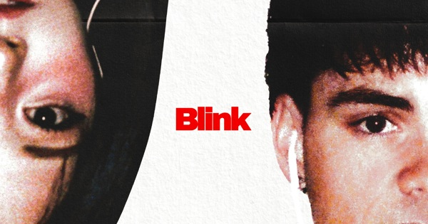
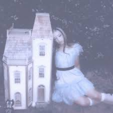
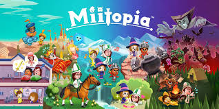

À propos de moi
J'ai 15 ans et je suis en seconde .
Je suis chatin au yeux marron vert
J'ai un chat . elle s'apelle Chipie.
J'aime :
- Lire , surtout de la fantasy (mes livres préférés sont le collège malefique et la fille du roi pirate).
- crée des bijoux, en grande partie des boucles d'oreilles .
- faire du tissage de perles (du brickstitch) et du point de croix(surtout faire des motifs floraux) .
- Ecouter de la musique (la plupart du temmps anglaise ) .
- Ecrire des histoires .
- Jouer a des jeux vidéo .





Les jeux video que j'affectionne :
- Batman Arkham Knight
- des jeux mario ( Mario odissée , Princess Peach showtime , mario kart deluxe , Super Mario Galaxy ) .
- Zelda : Link's awakening
- Mitopia
- lego DC super vilains


